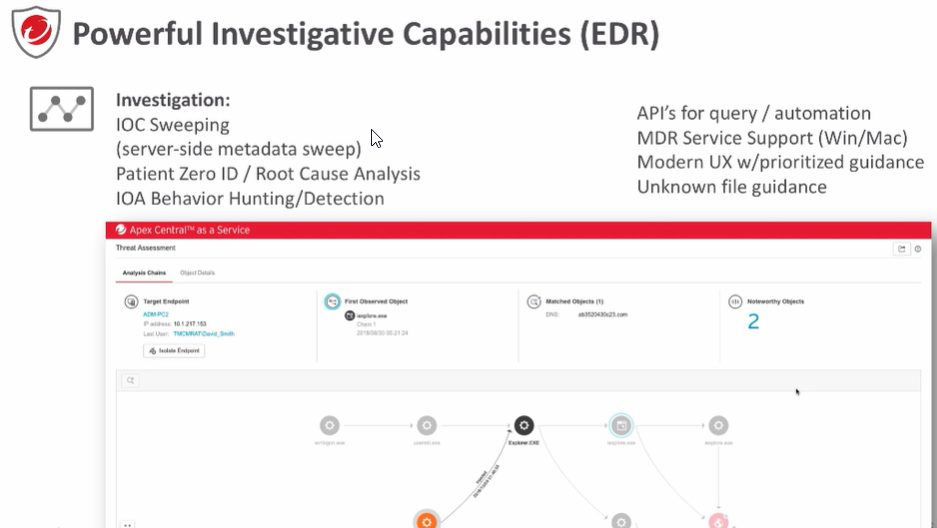

Centralized Visibility across all functions:(APEX CENTRAL)
Alerts, Timelines
AD heatmap
Policy compliance
Threat information
Edpoint Detection and Response(EDR):
Endpoints activities and behaviors are recorded from the endpoint 1) Endpoint Data Recording:
- Network, event, process, files, commands, operations..
- Tons of telemetry data points
- Stored on endpoints or in serve, or a hybrid approach 2) Investigation of Data and Responding:
- Search for Indicators of Compromise to understand the impact of detections
- Find the root cause of a detection and prevent/investigate again
- Caçar for Indicators of Attack based on behavior rules or threat intelligence. Automatic(detection) or manual

Post Detection Investigation
Exemplo do EDR funcionando:
1) Seleciona qualquer detecção para analisar
2) Ver se mais gente da empresa foi afetada(Clicando em Analisar Impacto)
3) Ele consegue ver assim que tiveram outras pessoas que acessaram tal site mas que não foram bloqueadas antes pelo motivo de ser algum problema/virus desconhecido
4) Ai entra o Root cause Analysis e ele mostra quem é a causa do problema, e ve analisa e ver mais detalhes sobre o problema. Black: Quer dizer que é benigno Red: Malicioso Orange: Suspeito
5) Clicar para ver mais detalhes
Pre-detection
Hunting
Multiple Ways to Hunt for Attacks:
-User Defined Suspicious Objects(UDSO) from Deep Discovery
- Open/ Import Indicator of Compromise(IOC) or STIX from threat feed.
Costumized Criteria(like Host, Filename/ User Account)
Preliminary Assessment:
- Inital assessment based on singles multiple search items
- Results with threat intelligence and prevalence
- Generate Root Cause Analysis for futher investigation
Managed Detection and Response can not only gather input from Endpoint Sensor